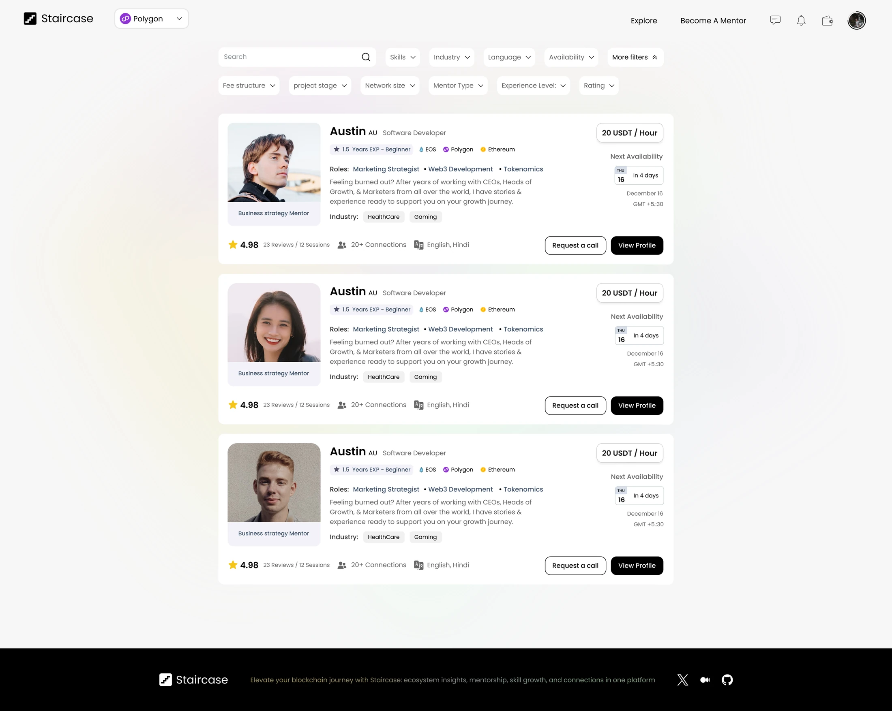
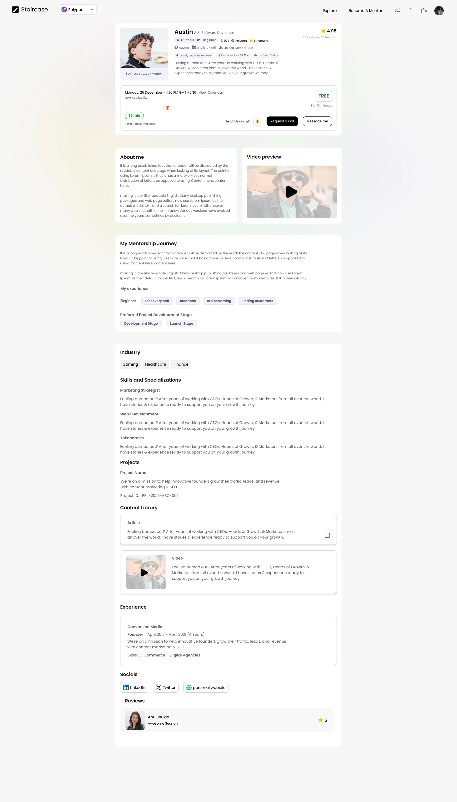
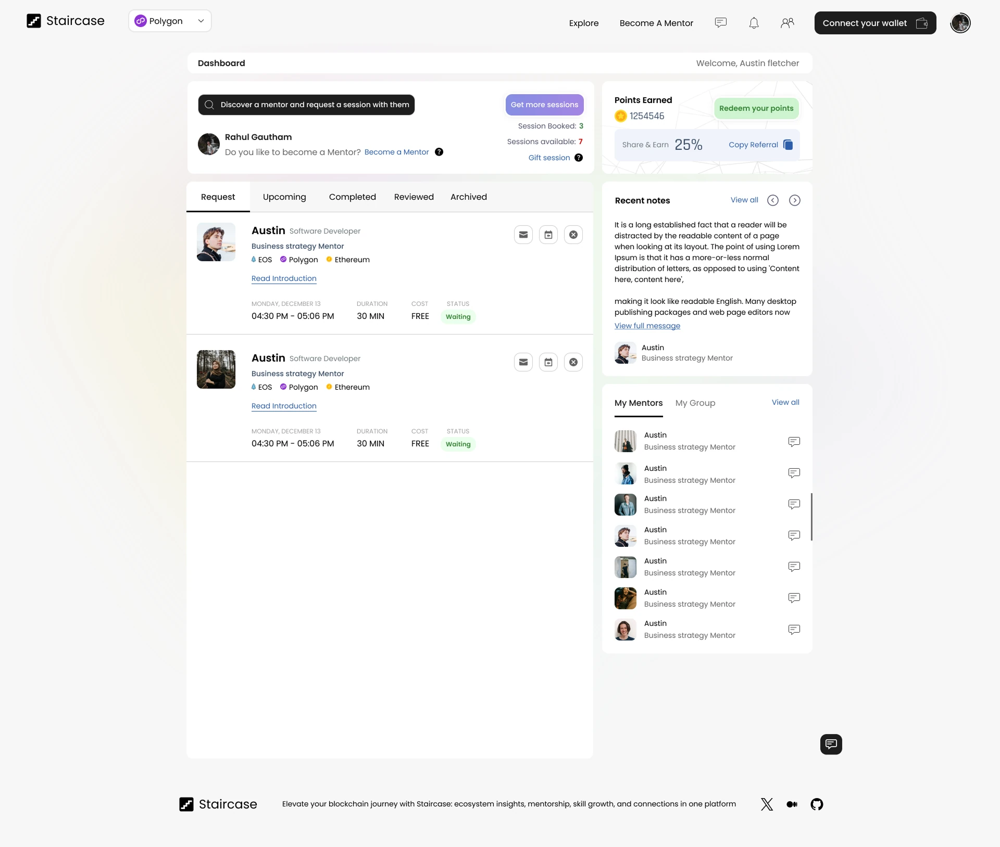
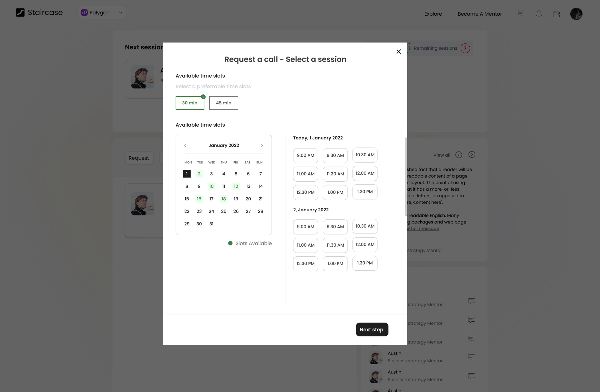

Match the intent
Search and layered filters reduce a large ecosystem into a relevant set of people and perspectives.
Case study / 04Mentorship marketplace
Staircase
A mentor–mentee platform designed from scratch to help people explore blockchain expertise, evaluate the right mentor, schedule a session, and continue the relationship.

01 / Context
Finding trusted guidanceBlockchain ecosystems can feel fragmented and difficult to navigate. Staircase connects people who want to learn with mentors who can offer focused, relevant guidance.
I designed the platform from scratch around one central question: what does a mentee need to know before trusting someone with their time and learning goals?
The answer shaped the entire journey—from filters and profile depth to transparent availability, session requests, and a dashboard that keeps the relationship active after booking.
Mentees needed to narrow a broad mentor network by skill, ecosystem, industry, language, availability, and experience.
A listing alone could not explain a mentor’s background, working style, knowledge, or credibility.
Duration, dates, available slots, and next steps had to become one understandable booking flow.
Requests, upcoming sessions, notes, mentors, and learning activity needed a useful home after discovery.
02 / Experience model
From intent to connectionI organized the product around the questions a mentee answers naturally: who is relevant, why should I trust them, when can we meet, and what happens next?
Search and layered filters reduce a large ecosystem into a relevant set of people and perspectives.
Expertise, experience, availability, content, social proof, and session details support an informed choice.
Requests, upcoming sessions, notes, mentor access, and referrals live together after the first booking.
Role profiles created from the supplied platform concept and interface requirements—not presented as research-validated personas.
Demand side
Exploring an unfamiliar or fast-moving blockchain topic and looking for credible, relevant guidance from someone with practical experience.
Supply side
A practitioner who needs to communicate expertise clearly, define availability, and receive session requests with enough learner context.
Each phase answers a different confidence question before the mentee commits time to a session.
A complementary product model for what mentors need to contribute before a useful session can happen.
03 / Design response
Progressive confidenceThe experience uses progressive disclosure: a scannable discovery surface first, deeper evidence on the profile, then a focused scheduling layer only when the mentee is ready.
A broad search field and compact filters let mentees move from curiosity to a precise shortlist without leaving the results page.
Availability, experience, skills, content, reviews, and session actions work together instead of becoming disconnected profile sections.
The booking modal reduces the task to duration, date, and available time, keeping background content visible but quiet.
Session states, recent notes, saved mentors, points, and referrals give the mentee a useful return point after a request is made.
04 / Final experience
Discovery to continuityThe final direction connects marketplace discovery, trust-building profiles, explicit scheduling, and ongoing session management as one product journey.
Search and filters make a broad mentor ecosystem easier to navigate.
Experience, content, reviews, and availability help mentees judge fit.
Duration, date, and available slots turn interest into a clear next step.
Requests, sessions, notes, and mentors support the relationship over time.
Four key moments across discovery, evaluation, scheduling, and ongoing mentorship.



Every layer answers a different confidence question: relevance in discovery, credibility on the profile, certainty during scheduling, and continuity on the dashboard.